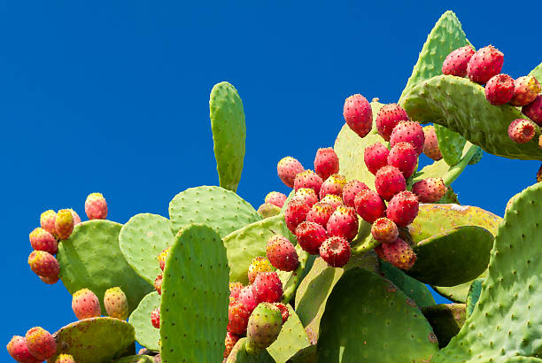

Prickly Pear Cactus (Opuntia spp.)
Scientific Name: Opuntia spp.
Description: The Prickly Pear Cactus is a member of the cactus family native to the Americas. It is known for its flat, paddle-like stems (called pads) covered with spines, and its vibrant fruit, known as "tunas." This drought-tolerant cactus is popular in arid landscapes and has both ornamental and edible value. The plant bears beautiful yellow, red, or pink flowers depending on the species.
Care Tips:
- Water: Requires minimal watering. Allow the soil to completely dry out between waterings. Overwatering can lead to root rot.
- Light: Prefers full sun. Needs at least 6 hours of direct sunlight daily to thrive.
- Temperature: Tolerates high temperatures well. Hardy in USDA zones 8-11 and can survive brief frosts.
- Soil: Use well-draining cactus soil or sandy soil mix. Avoid clay or soggy soil.
Medicinal Uses:
Prickly Pear Cactus has a long history of use in traditional medicine. Its pads and fruits are edible and rich in antioxidants, fiber, and vitamin C. The cactus is believed to help lower blood sugar and cholesterol levels. It is also used to soothe inflammation, treat wounds, and aid in digestion. The sap from the pads is applied topically to minor burns or skin irritations. Always handle with care, as the spines can cause injury if not removed properly.